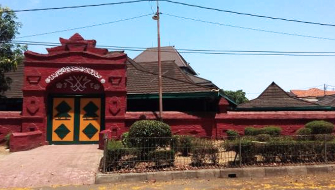

Kota Cirebon adalah kota yang terletak di Jawa Barat
Asal usul nama Cirebon
Pada awalnya Cirebon berasal dari kata sarumban, Cirebon adalah sebuah dukuh kecil yang dibangun oleh Ki Gedeng Tapa. Lama-kelamaan Cirebon berkembang menjadi sebuah desa yang ramai yang kemudian diberi nama Caruban (carub dalam bahasa Jawa artinya bersatu padu). Diberi nama demikian karena di sana bercampur para pendatang dari beraneka bangsa di antaranya Jawa, Sunda, Tionghoa, dan unsur-unsur budaya bangsa Arab, agama, bahasa, dan adat istiadat. kemudian pelafalan kata caruban berubah lagi menjadi carbon dan kemudian cirebon.
geografis
Titik 0 (nol) Kota Cirebon terletak pada 6°43′10.5″S 108°34′18.7″E pantai Utara Pulau Jawa, bagian timur Jawa Barat, memanjang dari barat ke timur 8 kilometer, Utara ke Selatan 11 kilometer dengan ketinggian dari permukaan laut 5 meter (termasuk dataran rendah). Kota Cirebon dapat ditempuh melalui jalan darat sejauh 130 km dari arah Kota Bandung dan 258 km dari arah Kota Jakarta.
Kota Cirebon terletak pada lokasi yang strategis dan menjadi simpul pergerakan transportasi antara Jawa Barat dan Jawa Tengah. Letaknya yang berada di wilayah pantai menjadikan Kota Cirebon memiliki wilayah dataran yang lebih luas dibandingkan dengan wilayah perbukitannya. Luas Kota Cirebon adalah 39,466 km² dengan dominasi penggunaan lahan untuk perumahan (32%) dan tanah pertanian (38%).
wisata
Kota Cirebon memiliki wisata tentang sejarah kejayaan kerajaan Islam, kisah para wali, Masjid Agung Sang Cipta Rasa, Masjid At-Taqwa Cirebon, kelenteng kuno, dan bangunan-bangunan peninggalan zaman Belanda. Kota ini juga menyediakan bermacam kuliner khas Cirebon, dan terdapat sentra kerajinan rotan serta batik.
Mesjid Agung Cirebon

Masjid Agung Cirebon adalah sebuah masjid yang terletak di dalam kompleks Keraton Kasepuhan, Kota Cirebon, Jawa Barat. Lokasi Masjid ini berada di bagian barat dari Alun-Alun Kota Cirebon.